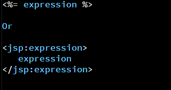

JAVA SERVER PAGES
JSP stands for JavaServer Pages. It is a servlet in disguise and it has access to the entire Java Libraries.
JavaServer Pages (JSP) is a technology which provides a simplified and fast way to create a web content. The JSP technology has a rapid development of web based applications that are server and platform-independent. It is a server-side programming technology which enables the creation of the dynamic and platform-independent method in building a web-based application.
In using JSP, the first thing to do is to set up the environment in order to start with JSP. In setting up the environment, there are several steps to do it.
- Download the SDK from the Oracle’s Java site – Java SE Download.
- Install and configure the set up.
- After configuring the set up, set the path PATH and JAVA _HOME environment variables in order to refer to the directory that contains java and javac.
- If you are running the windows and after installing the SDK in C:\jdk1.5.0_20, you need to add this lines in the C:\autoexec.bat file.
- After setting up the environment, now set up a web server, Tomcat.
set PATH = C:\jdk1.5.0_20\bin;%%PATH% and set JAVA_HOME = C:\jdk1.5.0_20
Steps in Setting up Apache Tomcat Server
- Download the latest version of Apache Tomcat from https://tomcat.apache.org/.
- Once you downloaded the installation, unpack the binary distribution into a convenient location. For example, in C:\apache-tomcat-5.5.29 on windows, or /usr/local/apache-tomcat-5.5.29 on Linux/Unix and create CATALINA_HOME environment variable pointing to these locations.
- After setting up the web server, setup now the CLASSPATH.
- If you are running Windows, you need to put the following lines in your C:\autoexec.bat file: set CATALINA = C:\apache-tomcat-5.5.29 and set CLASSPATH = %CATALINA%\common\lib\jsp-api.jar;%CLASSPATH%
NOTE: Assuming that your development directory is C:\JSPDev (Windows) or /usr/JSPDev (Unix), then you would need to add these directories as well in CLASSPATH.
The Scriptlet
This contains any number of JAVA language statements, variable or method declarations, or expressions that are valid in the page scripting language.
Syntax:
For example:
JSP DECLARATIONS
A declaration declares one or more variables or methods that you can use in Java code later in the JSP file. You must declare the variable or method before you use it in the JSP file.
Syntax:
For example:
JSP EXPRESSION
A JSP expression element contains a scripting language expression that is evaluated, converted to a String, and inserted where the expression appears in the JSP file.
Syntax:
For example:
JSP COMMENTS
JSP comment marks text or statements that the JSP container should ignore. A JSP comment is useful when you want to hide or "comment out", a part of your JSP page.
Syntax:
For example:
JSP DIRECTIVES
A JSP directive affects the overall structure of the servlet class. It usually has the following form.
Syntax:

JSP ACTIONS
JSP actions use constructs in XML syntax to control the behavior of the servlet engine. You can dynamically insert a file, reuse JavaBeans components, forward the user to another page, or generate HTML for the Java plugin.
Syntax:
EL Expressions means Expressions Language.
EXAMPLES:
- ${param.name} - With param as the incoming query paramter and name as the name of the parameter.
- header['']This gets host headers.
The format of EL expressions is starting with a dollar sign($) and followed by opening and closing brackets.
3 Forms of Scriptlet
- Scriptlet scriptlet
- Scriptlet expression
- Scriptlet Declaration
This is just like any other fragment.
This kind of scriptlet starts off with an equal sign. This is stil just a simple expression.
This is declared public and often placed outside the service method.
DEFINITION
JSTL stands for Javascript Tag Library, which allows programmatic constructs without having to program a servlet.
This involves the use of namespaces for packages like the following: formatting, programmatically, strings, sql and core. The names can be declared as a variable and will be used as a prefix later on. The imported libraries from JSTL has dynamic capabilities.
JSTL CUSTOM ACTIONS
You can create your own JSTL.
Example (common): sql -- This is used to connect to the database. To do so, a driver will be declared as well as a connection string.
Example (not common): name your jstl as 'sam':sam
Notes taken during class.